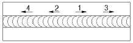
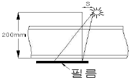

방사선비파괴검사산업기사 (2014-09-20 기출문제)
1과목: 비파괴검사 개론
1. 비파괴시험 방법에 대해 기술한 것으로 올바른 것은?
- 초음파탐상시험은 구조물을 가열했을 때에 생기는 표면온도분포를 이용하는 방법이다.
- 광탄성실험법은 구조물을 가열했을 때 생기는 변위에 관계한 간섭파를 관찰하여 결함을 판정하는 방법이다.
- 음향방출시험은 재료가 파괴되는 과정에서 미세한 균열의 진전에 수반하는 응력파를 검출하고 파괴예지나 방지에 이용되는 방법이다.
- 컴퓨터 단층촬영법은 파동의 간섭성을 이용하여 본래의 상을 홀로그래피를 이용한 방법이다.
(정답률: 85%)

2. 누설시험을 국부적 부위에 적용할 때 탐상감도가 가장 높은 검사법은?
- 진공시험
- 기포 누설시험
- 질량분석누설시험
- 압력변환 누설시험
(정답률: 57%)
3. 비파괴검사를 적용한 다음 내용중 가장 부적절한 것은?
- 직경 100mm, 두께 6mm, 길이 6m인 배관2개를 용접하여 방사선투과검사를 하고 내부는 침투탐상검사를 하였다.
- 직경 50mm, 두께 6mm인 강관의 용접부위 홈면을 침투탐상검사와 자분탐상검사를 하였다.
- 저장탱크를 만들기 위해 구입한 평판을 초음파탐상검사를 하였다.
- 직경 100mm, 축을 초음파탐상검사를 하였다.
(정답률: 89%)
4. 다음결함 중 방사선투과시험으로 검출하기 가장 어려운 것은?
- 기공
- 슬래그
- 용입부족
- 라미네이션
(정답률: 79%)
5. 강용접부의 제조검사 시 이용되는 자분탐상시험의 대상이 되는 결함이 아닌 것은?
- 개선면의 라미네이션
- 이면 가우징면의 용입부족
- 언더컷, 오버랩
- 응력부식 균열
(정답률: 69%)
6. 파면에 따른 주철의 분류에 해당되지 않는 것은?
- 백주철
- 반주철
- 공석주철
- 회주철
(정답률: 80%)
7. 마그네슘합금이 구조재료로써 갖는 특징을 설명한 것중 틀린것은?
- 소성가공성이 좋아 상온변형이 잘된다.
- 비강도가 커서 항공 우주용 재료로 사용된다.
- 기계가공성이 좋고, 아름다운 절삭면이 얻어진다.
- 감쇠능인 주철보다 커서 소음방지 구조재로서 우수하다.
(정답률: 67%)
8. 수소저장합금의 기능이 아닌 것은?
- 수소의 분리 및 정제
- 수소가스의 액화와 분해
- 열에너지 저장 및 수송
- 저온, 저압에서의 수소저장
(정답률: 70%)
9. SKH2, SKH3등 W계 고속도 공구강의 화학성분으로 옳은 것은?
- 18%V – 4%W – 1%Cr
- 18%W – 4%V – 1%Cr
- 18%Cr – 4%W – 1%V
- 18%W – 4%Cr – 1%V
(정답률: 89%)
10. 접종에 대한 설명으로 옳은 것은?
- 과냉도가 작은 금속에 물을 부어주는 것이다.
- 자기적 성질을 부여하여 합금을 형성시키는 것이다.
- 융체에 진동을 주어 응고가 되지 못하게 하는 것이다.
- 금속의 작은 조각을 핵의 종자가 되도록 첨가하는 것이다.
(정답률: 74%)
11. 제진 합금에 대한 설명으로 옳은 것은?
- 제진 합금에서 제진 성능은 외부마찰에 기인한다.
- 재료의 방진 능력을 나타내는 방법으로서는 비감쇠능이 이용된다.
- 일반적으로 강도가 큰 금속일수록 탄성도 있고, 감쇠능이 크다.
- 제진합금을 이용하여 기계 구조물을 만들면 기계적 정밀도는 향상되고, 피로응력, 부식에 대한 수명은 짧아진다.
(정답률: 60%)
12. Fe-C상태도에서 포정점의 온도는 약 몇℃인가?
- 210℃
- 768℃
- 1190℃
- 1490℃
(정답률: 80%)
13. 황동의 조직에 대한 설명으로 틀린 것은?
- γ-고용체는 가공성이 우수하다.
- α-고용체는 연하고 연성이 크다.
- β-고용체는 체심입방격자 조직의 결정을 갖는다.
- 실용되는 것은 α 및 α+β의 2개의 상이다.
(정답률: 48%)
14. 불변강이 아닌 것은?
- 인바
- 엘린바
- 플레티나이트
- 애드미럴티 메탈
(정답률: 60%)
15. 베어링 합금의 구비조건을 설명한 것 중 틀린 것은?
- 충분한 점성과 인성이 있어야 한다.
- 내소착성이 크고, 내식성이 좋아야 한다.
- 마찰계수가 크고, 저항력이 적어야 한다.
- 하중에 견딜수 있는 경도와 내압력을 가져야 한다.
(정답률: 89%)
16. 표점거리 50mm, 인장시험 후 표점거리가 60mm일 경우 연신율은?
- 16.7%
- 20%
- 25%
- 33.3%
(정답률: 80%)
17. 용접 분위기 가운데 수소 또는 일산화탄소의 과잉으로 가장 많이 발생되는 용접결함은?
- 언터컷이 발생한다.
- 기공이 발생한다.
- 슬래그의 양이 많아진다.
- 크랙이 발생한다.
(정답률: 85%)
18. 아크 용접에서 아크 쏠림을 방지하는 방법으로 틀린 것은?
- 직륭용접으로 하지말고 교류용접으로 한다.
- 접지점은 될 수 있는 대로 용접부에서 멀리한다.
- 아크의 길이를 길게한다.
- 받침쇠, 긴 가접부, 엔드탭을 이용한다.
(정답률: 71%)
19. 피복아크용접에 대한 설명으로 알맞은 것은?
- 입상의 플럭스를 사용한다.
- 티탄합금, 알루미늄 등의 용접에 사용한다.
- 주로 반자동 및 자동용접으로 수행한다.
- 고셀룰로오스계, 저수소계등의 용접봉을 사용한다.
(정답률: 57%)
20. 수축과 잔류응력을 줄이기 위해 사용하는 용착법으로 보기와 같은 용착법은?

- 백스텝법
- 스킵법
- 전진법
- 대칭법
(정답률: 100%)
2과목: 방사선투과검사 원리 및 규격
21. 양성자의 수는 같지만 중성자의 수가 달라 원자량이 서로 다른 원소는?
- 동위원소
- 원자
- 동질체
- 동중성자핵
(정답률: 92%)
22. 다음 중 반감기가 가장 긴 방사성 동위원소는?
- Co-60
- Ir-192
- Tm-170
- Cs-137
(정답률: 78%)
23. 다음 중 방사성동위원소의 붕괴형태가 아닌 것은?
- 감마선 방출
- 중성자 포획
- 양전자 방출
- 자발 핵분열
(정답률: 74%)
24. 필름 콘트라스트를 옳게 나타낸 것은?
- 특성곡선상의 기울기
- 측정가능한 최소의 농도 차
- 필름상에서 두 인접한 부위에서의 농도 차
- 시편에서 두 지역을 통과한 방사선의 강도 비
(정답률: 70%)
25. 방사선투과시험 필름에서 망상주름이 생기는 가장 주된 이유는?
- 현상액에 산성의 정착액이 들어갔을 때 생긴다.
- 국부적으로 필름이 심하게 눌려졌을 경우에 생긴다.
- 현상처리과정에서 온도가 갑자기 변할 때 생긴다.
- 수세용 물이 적절히 순환되지 않는 경우에 생긴다.
(정답률: 85%)
26. 투과사진에 입사시킨 빛의 투과율이 10%인 투과사진의 사진농도는 얼마인가?
- 0.3
- 1
- 1.3
- 2
(정답률: 88%)
27. 다음 중 X선이나 감마선이 물질과 상호작용할 때 궤도전자와 충돌하는 현상이 아닌 것은?
- 광전효과
- 톰슨산란
- 콤프턴효과
- 전자쌍생성
(정답률: 48%)
28. 방사선투과사진의 품질을 결정하는 요인이 아닌 것은?
- 농도
- 콘트라스트
- 관용도
- 상의 왜곡
(정답률: 78%)
29. 개인 피폭선량계로 조합된 것은?
- 필름배지, 서베이미터, GM계수관
- 필름배지, 포켓도시미터, 열형광선량계
- 전리함, 비례계수관, GM계수관
- 경보기, 서베이미터, 반도체 검출기
(정답률: 86%)
30. 결함에 의한 농도차가 (△D)와 결함의 존재를 인지할 수 있는 최소의 농도차, 즉 식별한계 콘트라스트(△D min)와의 관계중 결함이 식별되지 않는 경우는?
- △D ＞ △D min
- △D = △D min
- △D ＜ △D min
- △D ÷ △D min ＞ 1
(정답률: 67%)
31. 원자력안전법에 의한 방사능표지판의 바탕색은 무슨색인가?
- 검은색
- 붉은색
- 노란색
- 초록색
(정답률: 95%)
32. 1Ci를 SI 단위로 바르게 나타낸 것은?
- 3.7 x 1010R
- 2.58 x 10-4C/kg
- 0.001293g/C
- 3,7 x 1010Bq
(정답률: 89%)
33. 원자력안전법에서 규정한 일반인의 수정체에 대한 등가선량한도로 옳은 것은?
- 연간 10mSv
- 연간 12mSv
- 연간 15mSv
- 연간 50mSv
(정답률: 70%)
34. 방사선 작업종사자의 피폭선량을 측정하기 위한 검출기가 아닌 것은?
- 서베이미터
- 필름 배지
- TLD
- 포켓 선량계
(정답률: 84%)
35. 보일러 및 압력용기에 대한 방사선투과검사(ASME Sec.V Atr.2)규정에서 모재두께 50mm미만인 경우 기하학적불선명도의 최대 권고 값은 얼마인가?
- 0.010 인치
- 0.020 인치
- 0.030 인치
- 0.040 인치
(정답률: 63%)
36. 강용접 이음부의 방사선투과 시험방법(KS B 0845)으로 배관용접부의 방사선 투과검사를 하고자 한다. 선원과 시험부의 선원측 표면간거리 L1 이 20mm인 이중벽면과 촬영조건에서 용접면에 대해 아래그림과 같이 경사지게 조사할 경우 거리 S는 최대 얼마까지 할 수 있는가?

- 10mm
- 70mm
- 50mm
- 40mm
(정답률: 93%)
37. 원자력안전법에 따른 방사성동위원소 등의 사용자가 기록하여야 할 사항과 그 기록의 보존기간이 옳은 것은?
- 방사성동위원소 등의 사용기록 – 10년
- 자체처분한 방사성폐기물의 종류 및 수량 – 10년
- 방사성동위원소 등 사용시설의 방사선량률 – 10년
- 방사선작업종사자로 근무한 기간 중의 건강진단 기록 – 10년
(정답률: 53%)
38. 강용접 이음부의 방사선투과 시험방법(KS B 0845)에 따른 계조계의 각각 두께부분을 올바르게 나타낸 것은? (단, 계조계는 15, 20, 25형이며, 단위는 mm이다.)
- 1.0, 2.0, 4.0
- 2.0, 3.0, 4.0
- 3.0, 4.0, 5.0
- 4.0, 5.0, 6.0
(정답률: 80%)
39. 일반인의 손, 발에 대한 연간 등가선량한도는 얼마인가?
- 1.5mSv
- 3mSv
- 15mSv
- 50mSv
(정답률: 65%)
40. 금속 주조품의 방사선투과시험을 위한 표준방사선투과검사(ASME Sec.V, Atr.22 SE-1030)에서 투과도계를 하나만 사용해도 되는 농도범위는 얼마인가?
- 투과도계 위치의 –15% 혹은 +15%
- 투과도계 위치의 –15% 혹은 +30%
- 투과도계 위치의 –30% 혹은 +15%
- 투과도계 위치의 –30% 혹은 +30%
(정답률: 87%)
3과목: 방사선투과검사 시험
41. X선 타이머를 작동시켜도 고전압이 발생되지 않아 X선이 조사되지 않는 경우로 가장 적절하지 않은 것은?
- 타이머 동작 불량
- 관전압 계기회로 이상
- 양극의 고압케이블 단락
- 고압변압기 1차측 코일 단선
(정답률: 56%)
42. 방사선투과검사 시 양호한 촬영을 위한 기본사항으로 잘못된 것은?
- 선원의 크기는 가능한 한 크게 할 것
- 시험체면과 필름면은 가능한 한 밀착시킬 것
- 시험체면과 필름면은 가능한 한 평행하게 할 것
- 필름면의 중심에 선원의 위치는 수직이 되게 할 것
(정답률: 88%)
43. 필름 관찰기면의 밝기가 500lx이고, 투과사진을 투과한 후의 밝기가 50lx라면 이 투과사진의 농도는?
- 0.5
- 1.0
- 1.5
- 2.0
(정답률: 88%)
44. 불연속 주위의 단위 면적당 집중되는 응력의 비율이 가장 작다고 인정되는 불연속은?
- 기공
- 파이프
- 터짐
- 용입부족
(정답률: 74%)
45. 방사선투과사진의 불량상태에 따른 원인과 개선방법 중 노란얼룩이 발생하는 원인은?
- 정착액의 성능이 감소된 경우
- 정전기에 의한 방전현상
- 노출전 필름이 꺽인 경우
- 노출이 과다한 경우
(정답률: 77%)
46. X선 필름의 사진작용을 증대시키기 위해 사용되는 증감스크린으로 적합한 재질은?
- 납
- 마그네슘
- 니켈
- 알루미늄
(정답률: 100%)
47. ℽ-선원의 에너지를 나타내는데 사용하는 단위는?
- 큐리(Curie)
- 렌트겐(Roentgen)
- 반감기(Half-Life)
- 메가전자볼트(MeV)
(정답률: 69%)
48. 베타트론에서 전자를 고속으로 가속시키는 원리는?
- 자기유도효과
- 고주파의 가열
- 교류자계의 공진
- 정전하의 방전
(정답률: 78%)
49. X선 발생장치의 노출도표와 관계가 없는 조건은?
- 사용관전압
- 필름타입
- 필름의 흑화도
- 방사선의 강도
(정답률: 36%)
50. X-선 초점을 다른위치로 이동하여 두 번 노출한 후 결함 상의 이동상태로부터 결함의 위치(깊이)를 계산하는 방법은 무엇인가?
- 입체방사선투과검사법
- 확대촬영법
- 파라덱스법
- 고속도방사선투과검사법
(정답률: 74%)
51. 방사선투과검사에 관한 설명으로 옳은 것은?
- 방사선원과 시험체의 거리가 증가하면 검사시간이 단축된다.
- 시편과 필름사이 거리가 증가하면 상이 확대되고 선명도가 감소된다.
- 속도가 빠른필름을 사용하면 콘트라스트가 감소한다.
- 시편으로부터 산란되는 감마선은 선원으로부터 나오는 방사선에 비해 단파장인 경우가 많다.
(정답률: 74%)
52. 유공형 투과도계의 상질 중 엄격한 상질 수준은?
- 1-1T
- 2-1T
- 4-1T
- 4-4T
(정답률: 77%)
53. 방사선투과검사용 구리 스크린을 납 스크린과 비교한 설명으로 가장 관계가 먼 것은?
- 증배율이 낮다.
- 방사선 흡수가 적다.
- 산화납 스크린과 비슷하다.
- 높은 에너지에서 감도가 좋다.
(정답률: 63%)
54. 1회 노출로 방사선 투과사진에 나타난 결함 특성을 관찰하여 그 제품에 미치는 영향을 평가하고자 한다. 이 때 알 수있는 결함의 특성이 아닌 것은?
- 결함의 깊이
- 결함의 크기
- 결함의 위치
- 결함의 모양
(정답률: 82%)
55. X선과과 시험체 사이에 설치한 필터는 어떤 작용에 의해 산란 방사선을 감소시킬 수 있는가?
- 방사선의 강도를 줄임으로써
- 후방산란선을 줄임으로써
- 일차방사선의 파장이 긴 부분을 흡수함으로써
- 일차방사선의 파장이 짧은 부분을 흡수함으로써
(정답률: 86%)
56. 일정기간 동안 정착액을 사용하면 그 성능이 약화되는 주된이유는?
- 유효 성분이 사진에 흡수되므로
- 유효 성분이 가라 앉으므로
- 용해된 은화염의 축적이 많아지므로
- pH가 낮아짐으로
(정답률: 77%)
57. 직경이 2m인 압력용기의 전 원주 용접부에 대해 1회 노출로 방사선 투과검사를 하려한다. 다음 중 투과도계의 위치와 마커의 위취로 적합한 것은?
- 투과도계, 마커 모두 압력용기 외부에 부착한다.
- 투과도계, 마커 모도 압력용기 내, 외부 2군데에 부착한다.
- 투과도계는 압력용기 내부에, 마커는 압력용기 외부에 부착한다.
- 투과도계는 압력용기 외부에, 마커는 압력용기 내부에 부착한다.
(정답률: 62%)
58. 공업용 X선 발생장치의 관전압이 250KV, 관전류가 5mA이고, 강판의 두께가 20mm일 때 전방 산란 선량률이 가장 작은 산란각은?
- 15°
- 45°
- 60°
- 90°
(정답률: 60%)
59. 8mA-min으로 촬영한 방사선 투과사진에서 농도 0.8을 얻었다. 농도2.0의 사진을 얻으려고 한다. 필름의 특성곡선상에서 농도 0.8과 2.0사이의 log E 차이가 0.76이라면 농도 2.0의 사진을 얻기 위한 노출량(mA-min)은?
- 46.4
- 32.2
- 18.4
- 16.0
(정답률: 87%)
60. 시험체-필름간 거리가 5.0인치, 선원-시험체간 거리가 43.0인치이고 선원의 크기가 3.0mm일 때 기하학적불선명도 Ug값을 구하면?
- 0.020 인치
- 0.028 인치
- 0.014 인치
- 0.006 인치
(정답률: 47%)